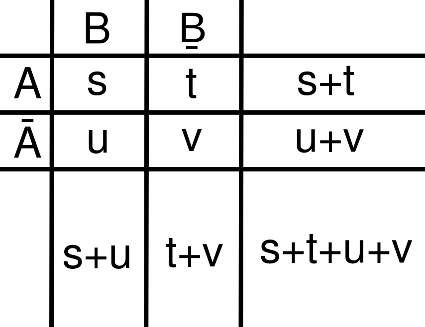
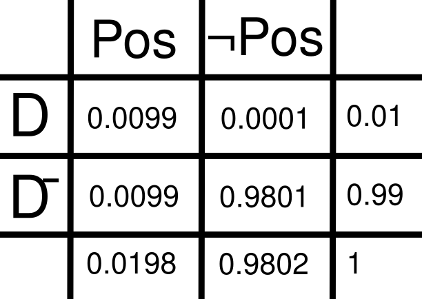

The Intuition Behind Bayes' Theorem
What is Bayes' Theorem?
Bayes' Theorem is one of the most important ideas in probability theory, discovered by Thomas Bayes in the 18th century. It gives us a principled way to update our beliefs when we receive new evidence — and it shows up everywhere: medical diagnosis, spam filters, machine learning, scientific inference, and even everyday reasoning under uncertainty.
Imagine a medical test. If a patient tests positive, what is the probability that they actually have the disease? Intuitively, we might think a positive result means a high probability, but that's not always true. Bayes' Theorem allows us to calculate this properly by combining prior knowledge with new evidence.
Everything about this theorem makes sense when you derive it yourself. It's very simple to derive and you only have to do it once — similar to deriving the basic formula of a derivative. You do it once and it sticks with you forever.
At its core, the theorem helps us answer:
What is the probability of A given that B has occurred?
A Visual Intuition

The diagram above divides the entire sample space into four cells using two binary splits: whether event A occurs (left column) or doesn't (right column), and whether event B occurs (top row) or doesn't (bottom row). Each cell represents a distinct combination of outcomes — for example, the top-left cell is where both A and B happen, and the bottom-right is where neither does.
All probabilities can be thought of as part over whole. This idea is the foundation of everything that follows.
Deriving Bayes' Theorem
Label the four cells of the grid s, t, u, and v, where each letter represents the probability mass in that cell:
s = P(A and B) — top-left: both A and B occur
t = P(A and ¬B) — bottom-left: A occurs, B does not
u = P(¬A and B) — top-right: B occurs, A does not
v = P(¬A and ¬B) — bottom-right: neither occurs
s + t + u + v = 1 (the whole sample space)
Now we can express every probability we need purely in terms of these four values. P(A) is the entire left column; P(B) is the entire top row; and the conditionals zoom in on a single row or column and ask what fraction of it is the top-left cell s.
P(A) = (s + t) / (s + t + u + v)
P(B | A) = s / (s + t) — of the left column, what fraction is s?
P(A) · P(B | A) = s / (s + t + u + v)
P(B) = (s + u) / (s + t + u + v)
P(A | B) = s / (s + u) — of the top row, what fraction is s?
P(B) · P(A | B) = s / (s + t + u + v)
Notice something interesting: both expressions give the same result.
This means:
P(A) · P(B | A) = P(B) · P(A | B)
Mathematics always gives us a pat on the head any time we find a symmetry. This one makes geometric sense too: swapping rows and columns in the grid doesn't change which cell is in the top-left corner — it's always s.
Finally, divide both sides by P(B):
P(A | B) = (P(A) · P(B | A)) / P(B)
A Surprising Consequence
Bayes' Theorem becomes really interesting when it contradicts our intuition. Suppose a disease affects only 1% of the population, so P(D) = 0.01. A test for it is 99% accurate: P(Pos | D) = 0.99 and P(Pos | ¬D) = 0.01.
P(D) = 0.01
P(Pos | D) = 0.99
P(Pos | ¬D) = 0.01
Now suppose you test positive. What is P(D | Pos)? Using Bayes' Theorem:
P(D | Pos) = (P(D) · P(Pos | D)) / P(Pos)
First compute P(Pos):
P(Pos) = P(D)P(Pos | D) + P(¬D)P(Pos | ¬D)
= (0.01)(0.99) + (0.99)(0.01)
= 0.0099 + 0.0099 = 0.0198
Now plug everything in:
P(D | Pos) = 0.0099 / 0.0198 = 0.5

So even after testing positive, there is only a 50% chance you actually have the disease.
Out of 10,000 people:
• 100 have the disease → 99 test positive
• 9,900 do not → 99 still test positive
Total positives = 198, real cases = 99 → about 50%
This is the key insight: evidence alone is not enough, the base rate matters just as much. A highly accurate test applied to a rare condition will still produce a flood of false positives, simply because there are so many more healthy people to test. Bayes' Theorem is the tool that keeps that honest.